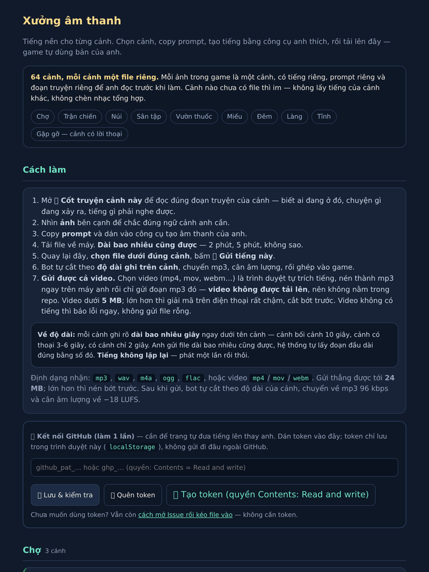

Anh báo: tải tiếng mới lên mà vẫn nghe bản cũ, mà tiếng mới không thấy đâu
Có một file bị kẹt lại giữa đường. Anh bấm gửi, máy anh báo thành công, nhưng file
nằm trong thư mục chờ xuong-am-inbox/ và không bao giờ được chuyển vào
docs/assets/am/ — nơi game đọc.
! [rejected] main -> main (fetch first)error: failed to push some refs
File bị kẹt lần đó là cong_dong_doi_mat.mp3 và hoa_truong_cuu.mp3.
Em đã kiểm: giờ cả hai đã vào đúng chỗ, hộp nhận trống.
Bot giờ thử lại 5 lượt. Mỗi lần bị từ chối thì nó kéo bản mới nhất của main về, đặt việc của mình lên trên, rồi push lại. Hết 5 lượt mà vẫn không được thì nó báo lỗi đỏ rõ ràng, không im lặng bỏ file.
Chuyện này khác hẳn. File mới đã lên mạng thật, nhưng tai anh vẫn nghe bản cũ.
cache-control: max-age=600
cong_dong_giau mà tên file vẫn là
cong_dong_giau.mp3. Với máy anh, đó vẫn là "cùng một địa chỉ" — nên nó
lấy bản trong bộ nhớ đệm ra phát, không thèm tải lại.
Mỗi file giờ có một mã vân tay — 8 ký tự đầu của mã băm nội dung. Game gắn mã đó
vào địa chỉ: cong_dong_giau.mp3?v=b2ebe5f4. Thay nội dung là mã đổi, địa chỉ
đổi, trình duyệt buộc phải tải bản mới. Không còn chờ 10 phút, không cần xoá bộ nhớ đệm.
Em chạy game và xưởng trên đúng địa chỉ công khai, giả lập iPad, rồi xem trình duyệt thật sự gọi những địa chỉ nào:
| Việc kiểm | Kết quả |
|---|---|
| Cảnh trong danh sách | 44 |
| Cảnh có mã vân tay | 44 / 44 |
Game gọi tiếng có ?v= | có, đủ |
Xưởng phát lại có ?v= | có, đủ |
| File kẹt trong hộp nhận | 0 |
| mp3 còn nguyên | 44 / 44 |
| Lỗi trang | không |
| File tải lỗi (4xx) | không |
| Tràn ngang iPad / iPhone | không |
Địa chỉ trình duyệt thật sự gọi, lấy từ lúc chạy thử:
cong_dong_giau.mp3?v=b2ebe5f4
hoa_truong_cuu.mp3?v=334eee11
cho_02.mp3?v=4bd94b1f

Em so nội dung từng file trước và sau, để chắc không phải "báo xong mà file vẫn cũ":
| Cảnh | Nội dung đổi? |
|---|---|
cho_02 | đã đổi |
cong_dong_doi_mat | đã đổi |
hoa_truong_cuu | đã đổi |
cong_dong_toan_luc | đã đổi |
cong_dong_giau | đã đổi |
Trang này do AI tạo (OpenHands) nhân danh chủ repo.